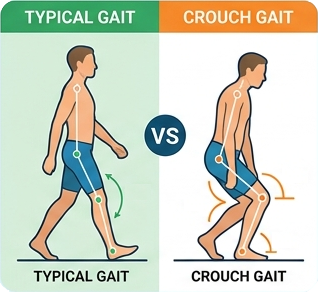

Noah, a 5-year-old boy, was referred by an orthopaedics doctor for out-patent physiotherapy with details of referral as below:
Diagnosis: genu valgum
Reason for referral: easy fall
This is the 1st OPD Physio session. Noah is brought by his mother.
HPI:
Noah’s mother expressed worries over his awkward gait which leads to his frequent fall, nearly 1-2 times per week.
In fact, she and Noah’s father noted that he walked with awkward gait since he started to walk independently around 13 months.
They thought that it was primitive walking pattern. Until around 2 years old, the awkward gait persisted hence they sought medical advice. They attended Family Medicine Clinic and were referred to Orthopaedics SOPD.
Orthopaedic diagnosis is genu valgum.
Lower limb scannogram is done and results are normal.
Birth history:
G1 P1, gestation 38 weeks NSD born at Union Hospital
AN, PN unremarkable
SHx: first child in the family
lives with parents (both working)
main carer: maid
studying K3 in mainstream kindergarten
PMH:
- vaccination up to date, normal development
- genu valgum with normal lower limb scannogram; FU Ortho SOPD
P/E:
Behaviour: cheerful, follow commands
Vision and hearing: no concern from carer, follow commands
Speech: speak in full sentences
Gross motor:
Gait: crouch knee and jump knee gait
Stairs walking: clumpsy, cautious, wobbling, 1 hand on rail, alternate step when going up, same step when going down
Jump forward 12” with both feet landing independently
Jump across 2” hurdle with 1 foot leading
Single leg stand both feet 3 seconds with trunk wobbling

You are physiotherapist working in Paed OPD. He is your new case today.
🩺 What investigation or physical exam would you perform/check?
1. Check Gower sign
2. Check joint ROM, muscle length and muscle tone of LL
3. Check reflex
4. Check sit up
💊 Select all management options you would provide:
📊 Final Score & Response Chart
Q
Option
Indicated?
Your Selection
Learning point: - think, assess and manage comprehensively
- is it just a local orthopaedics issue, or neurological-related or any
neuromuscular diseases?
- refer speciality when necessary
Question 1: A - Check Gower sign Noah’s orthopaedic diagnosis is genu valgum. Yet, his lower limb scannogram is normal. His crouching and jump knee gait is something we need to drill on.
Here comes Ddx again - is it just a local orthopaedics issue, or neurological-related or any neuromuscular diseases?
Positive Gower sign indicates weakness in proximal muscles, pointing to possibility of neuromuscular diseases eg: Duchenne muscular dystrophy, Becker muscular dystrophy and spinal muscular atrophy.
It is also accompanied by calf pseudohypertrophy, toe walking, waddling gait and difficulty in stairs climbing. Further investigation is needed - creatine, kinase blood test and genetic testing - to confirm the diagnosis.
Option B - Check joint ROM, muscle length and muscle tone of LL Although the referral only documented genu valgum, our physiotherapy assessment not only limits to knee only but comprehensively to whole LL, especially seeing Noah’s crouching and jump knee gait. Is it due to muscle weakness, muscle tightness, muscle spasticity or joint contracture?
Option C - Check reflex Here comes Ddx again - is it just a local orthopaedics issue, or neurological-related or any neuromuscular diseases?
Abnormal findings of reflex - hyporeflexia, hyperreflexia or clonus warrant further investigation as it could point to neurological-related conditions.
Option D - Check sit up Sit up assesses a child’s core muscle strength. It has been proved that core muscles are essential for maintaining postural stability and enhancing body control and hence helps improve balance and reduce falls in children.
In Noah’s case, his lower limb tightness and spasitcity are speaking far louder to his frequent falls.
Therefore, checking sit up is in lower priority at this moment.
(Reference: Mohamed Abdelbaky, F., & Ahmed Ibrahim, A. (2014). Effect of core strength training on power and dynamic balance among child athletes. Journal of Applied Sports Science, 4(2), 93-98.)
Question 2: Option A - Escort to AED immediately & Option B - Refer to Paed SOPD From Noah’s crouching and jump knee gait, we found out, after physiotherapy assessment, he has spastic long hip adductor and gastrocnemius bilaterally, tight hamstrings, quadriceps and short hip adductor bilaterally, brisk knee and ankle jerks bilaterally and bilateral upgoing plantar reflex.
All these suggest possible neurological-related conditions which warrant further investigation. Noah did not present any urgent medical signs which need urgent medical care.
Hence, escort to AED immediately is not indicated. However, he needs to be referred to paediatrician for further investigation.
Option C - Lower limb stretching exercises The paediatrician might order blood test, imaging and/or genetic testing for working up the diagnosis.
While waiting all these, stretching exercises have been proved to be effective to improve muscle length and prevent joint contracture.
Lower limb stretching exercises could be started to help Noah’s bilateral spastic long hip adductor and gastrocnemius, bilateral tight hamstrings, quadriceps and short hip adductor.
In addition to passive stretching, active stretching (eccentric contraction) is effective in improving walking speed and function.
Also, combining stretching exercises with orthosis or botox injection could have beLer outcomes.
(Reference: Kalkman, B. M., Bar-On, L., O’Brien, T. D., & Maganaris, C. N. (2020). Stretching interventions in children with cerebral palsy: why are they ineffective in improving muscle function and how can we beLer their outcome?. Frontiers in physiology, 11, 131.)
Option D - Balance exercises There are many reasons to explain that why kids fall frequently - poor balance, weak eye hand and limbs coordination, weak muscle strength, visual and vestibular conditions.
In Noah’s case, his lower limb tightness and spasticity are speaking far louder to his frequent falls. Therefore, balance exercises are in lower priority at this moment.